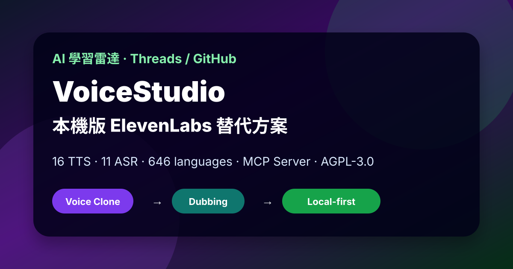

Threads｜遠地平線：VoiceStudio，本機版 ElevenLabs 替代方案與 MCP 語音工作台

一句話摘要
VoiceStudio 把 voice cloning、voice design、video dubbing、dictation、transcription、audiobook generation 做成一個本機優先的桌面工作台。它的價值不只是「免費版 ElevenLabs」，而是讓敏感錄音、內部配音、課程素材與離線工作站可以在自己的硬體上完成處理；但也要留意 active beta、模型下載容量、CPU/GPU 速度差異、AGPL-3.0 授權與聲音複製合規風險。
來源脈絡
| 欄位 | 內容 |
|---|---|
| Threads 分享連結 | https://www.threads.com/share/BADHYmarZj/ |
| Canonical Threads | https://www.threads.com/@futuredragonnn/post/Dc7oJkBm_9g |
| 作者 | 遠地平線（@futuredragonnn） |
| 可見互動 | 約 4,481 次瀏覽、68 likes、8 replies、7 reposts、73 shares |
| GitHub repo | https://github.com/debpalash/VoiceStudio |
| GitHub stars / forks | 約 19.5k stars、2.5k forks（擷取時） |
| 最新 release | v0.5.1 — VoiceStudio，2026-08-28 |
| 授權 | AGPL-3.0；下載模型保留各自上游授權 |
Threads 可見文字重點：
> VoiceStudio — 本機版 ElevenLabs。想要類似 ElevenLabs 的功能，又不想把錄音跟聲音檔傳上雲端？這週 GitHub 趨勢榜上的 VoiceStudio 能直接在你電腦本機跑。它整合了 16 個語音生成引擎、11 個語音辨識引擎，支援 646 種語言；聲音複製、影片配音、聽寫轉文字到有聲書製作都包辦。整套本機流程不用註冊帳號、不用 API 金鑰，也不用每個月繳訂閱費。聲音複製只需要 3 秒參考音檔，也能靠調參數設計新聲音；做影片配音時可丟 YouTube 連結或本機影片，自動聽寫、翻譯、生成聲音並輸出 MP4；附 MCP 介面，讓 Claude 或 Cursor 類 AI 助手能呼叫。macOS、Windows、Linux、Docker 都能裝，AGPL-3.0；代價是初次模型下載好幾 GB，CPU 可跑但較慢。
GitHub 官方 README 交叉驗證
VoiceStudio README 的專案描述為：
> VoiceStudio is the open-source, fully-local ElevenLabs alternative — voice cloning, voice design, video dubbing, dictation, transcription & audiobook creation in 646 languages.
README 也列出：
- 16 個 TTS engines。
- 11 個 ASR engines。
- 646-language catalogue；但實際覆蓋與品質取決於選用 engine。
- macOS 13.3+ Apple Silicon、Windows 10/11 x64、Linux x86_64 glibc 2.39+、Docker。
- Compute 支援 CUDA、Apple Silicon MPS / MLX、Linux ROCm、CPU，也可使用 remote workers。
- Interfaces 包含 Desktop app、本機 REST / SSE / WebSocket API、OpenAI-compatible audio API、MCP Server。
- Voices、projects、settings、outputs 預設留在本機。
- License 是 AGPL-3.0 application；下載模型維持各自 upstream terms。
官方 repo：
https://github.com/debpalash/VoiceStudio
可支援的主要工作流
| 工作流 | Threads 說法 | GitHub README 對應 |
|---|---|---|
| 聲音複製 | 3 秒參考音檔即可；5–15 秒通常更好 | Voice Cloning: zero-shot synthesis from a short reference clip |
| 聲音設計 | 可調性別、年齡、口音、音高、情緒 | Voice Design: age, accent, pitch, style, delivery instructions |
| 影片配音 | YouTube 連結或本機影片 → 聽寫 → 翻譯 → 配音 → MP4 | Video Dubbing: transcribe / translate / preserve speaker timing 類工作流 |
| 聽寫/轉錄 | 本機 ASR | 11 ASR engines；dictation、transcription |
| 有聲書/長文 | 長篇聲音生成 | stories、audiobooks、batch generation |
| Agent / IDE 呼叫 | Claude / Cursor 可透過 MCP 介面呼叫 | README 明列 MCP Server 與 local API |
本機優先的價值
- 錄音、受訪者聲音、課程素材、企業內部訓練音檔不用先送上雲端服務。
- 不需要為每次生成支付雲端 usage fee；成本轉為本機硬體、硬碟、模型管理與維護。
- 可部署在不能連外或高度受控的內部工作站。
- 可被 Claude、Cursor 或其他支援 MCP 的 agent/IDE 作為本機語音工具呼叫，形成「文字 → 配音 → 影片輸出」的可自動化管線。
導入檢核表
- 先確認平台：Apple Silicon macOS、Windows x64、Linux glibc 2.39+ 或 Docker。
- 預留模型與輸出檔容量；Threads 提醒初次模型下載可能吃掉好幾 GB，低於 16GB 空間的輕薄筆電不適合。
- 先用最新 release，不要直接用 main 做穩定生產，因 README 明確標示 active beta。
- 做敏感資料處理前，檢查 voices / projects / outputs 實際儲存路徑與備份政策。
- CPU 可跑但速度較慢；長篇生成或批量配音建議評估 CUDA / Apple Silicon / ROCm。
- 若用 Docker，先用官方 quick run 或 release 文件，再把資料 volume、port、GPU profile 設好。
- 若接 MCP / Claude / Cursor，只暴露必要工具與本機端口，避免讓 agent 任意讀寫敏感音檔資料夾。
- 商用與公開發布前，確認 VoiceStudio AGPL-3.0、各模型上游授權、音訊素材授權與聲音本人同意。
風險與限制
- 「不用帳號、不用 API key、不用訂閱」只代表本機流程，不代表沒有硬體成本、時間成本、模型授權限制或商用風險。
- 專案仍是 active beta；桌面 app、engine、模型下載與跨平台安裝都可能變動。
- AGPL-3.0 對網路服務與派生作品有強 copyleft 義務；若企業要整合進產品，需先做法務與架構評估。
- 聲音複製是高風險能力，只能使用自己的聲音或已取得明確授權的聲音；不得複製名人、同事、學生、客戶或家人的聲音來冒名。
- 即使音檔留在本機，模型下載來源、第三方 engine、Docker image、remote worker、備份同步資料夾仍可能造成資料外流。
- MCP 接入後，AI agent 可能自動讀取、生成或覆寫檔案；需要沙盒、最小權限與人工確認。
適合 / 不適合
適合：
- 機密錄音轉文字與配音實驗。
- 課程、內訓、Podcasts、短影片本機配音 prototype。
- 離線或半離線工作站。
- 想研究多 TTS / ASR engine、MCP voice tool 與 local AI pipeline 的開發者。
不適合：
- 幾秒內要大量商業成品的雲端產線。
- 硬碟空間不足或無法接受模型下載的設備。
- 沒有授權治理、聲音本人同意、AI 標示與人工審聽流程的公開配音。
- 不想處理 AGPL-3.0 與上游模型授權的閉源商業整合。
原始連結
Threads：
https://www.threads.com/@futuredragonnn/post/Dc7oJkBm_9g
GitHub：
https://github.com/debpalash/VoiceStudio
Latest release：